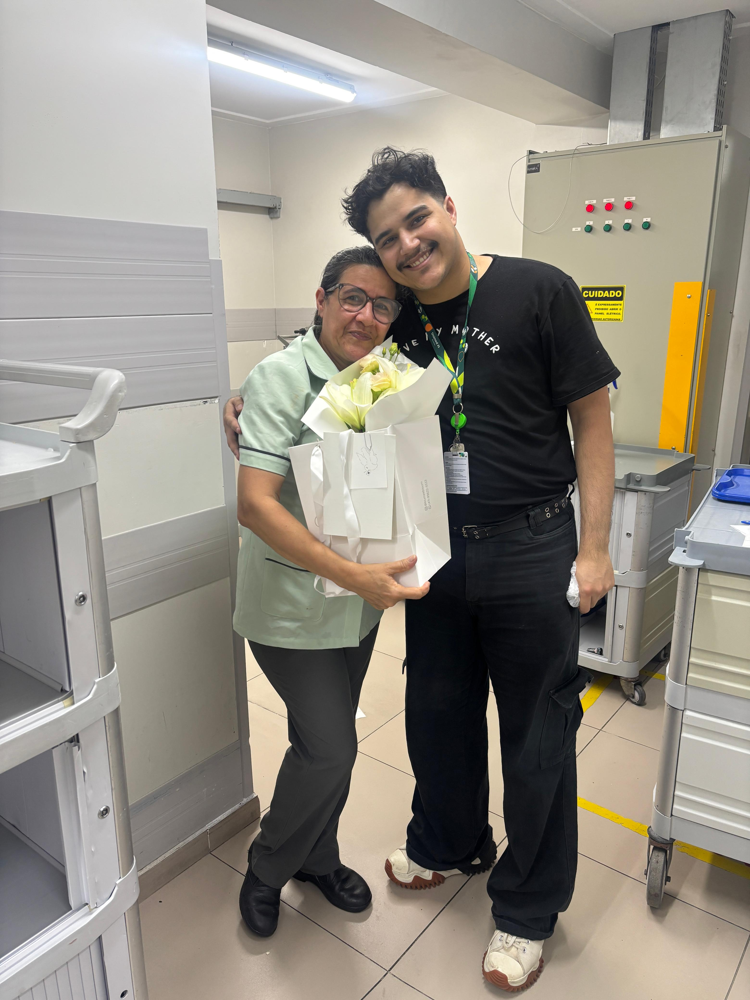

Mãe,
Existem tantas coisas que eu poderia dizer, mas ainda assim parece impossível colocar em palavras tudo o que você representa pra mim. Você não é só a pessoa que me trouxe ao mundo, você é a razão pela qual eu sigo em frente todos os dias.
Desde sempre, foi você quem esteve ali. Nos momentos difíceis, nos dias bons, nos dias em que nem eu acreditava em mim mesmo. Você sempre acreditou. Sempre cuidou. Sempre deu um jeito.
Sua força é algo que eu admiro profundamente. Sua bondade, sua paciência e o seu jeito de amar são coisas que eu carrego comigo em tudo que faço. Se hoje eu estou aqui, tentando crescer, evoluir e construir algo melhor, é porque você me ensinou isso, mesmo sem perceber.
Você é linda — não só por fora, mas principalmente por dentro. É uma beleza que vem do cuidado, da dedicação e do amor que você sempre deu sem pedir nada em troca.
Essa carta é só uma pequena forma de tentar te mostrar o quanto você é especial pra mim. E mesmo que eu não diga isso todos os dias, eu quero que você saiba: eu sou extremamente grato por tudo. Por você existir. Por ser minha mãe.
Com todo meu amor,
Seu filho 💛
